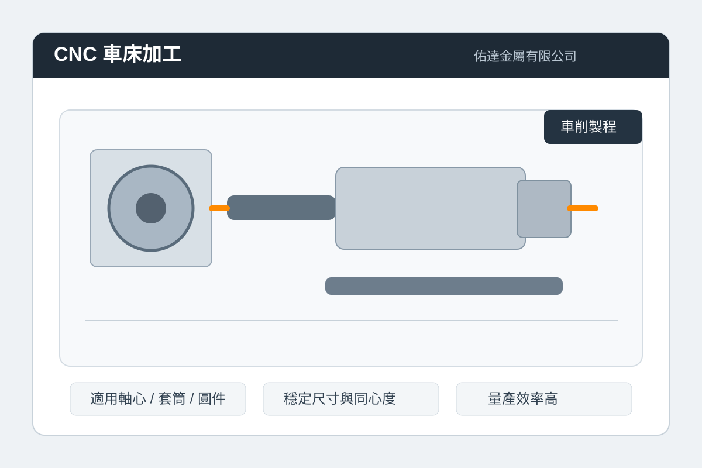
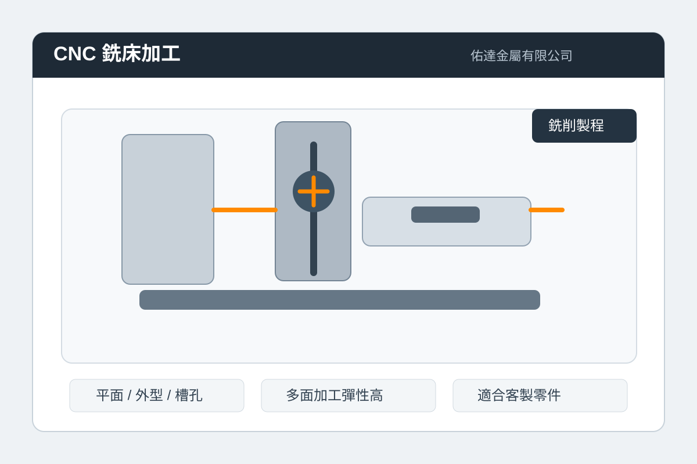
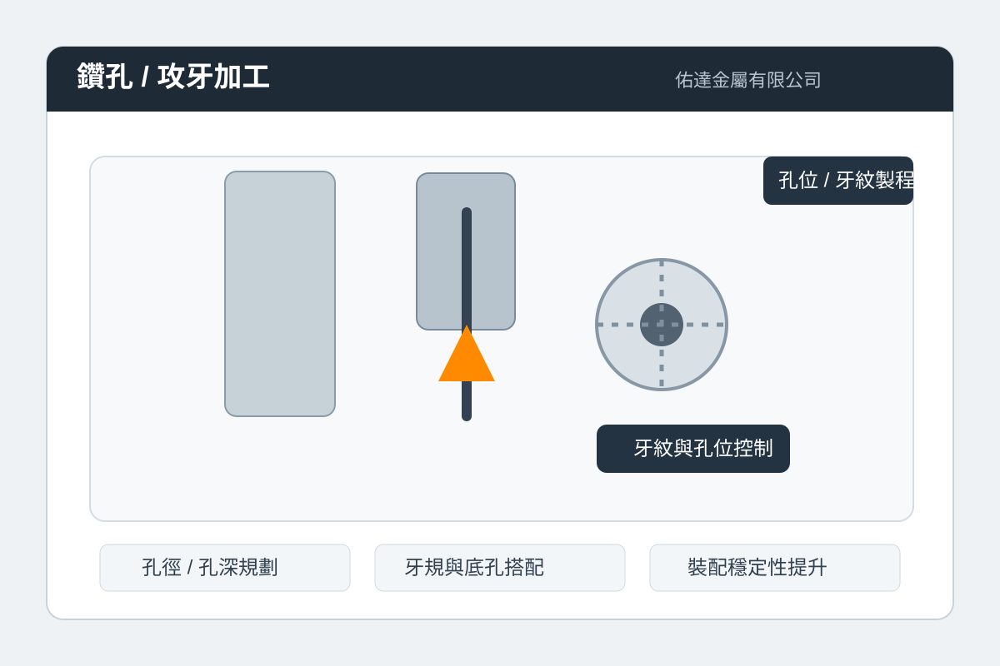
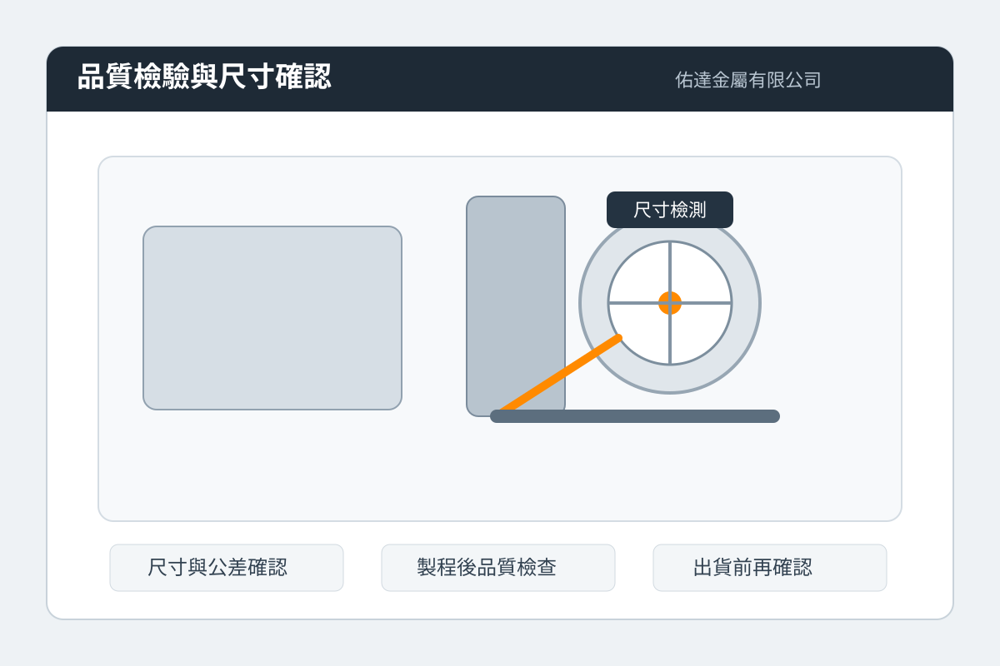
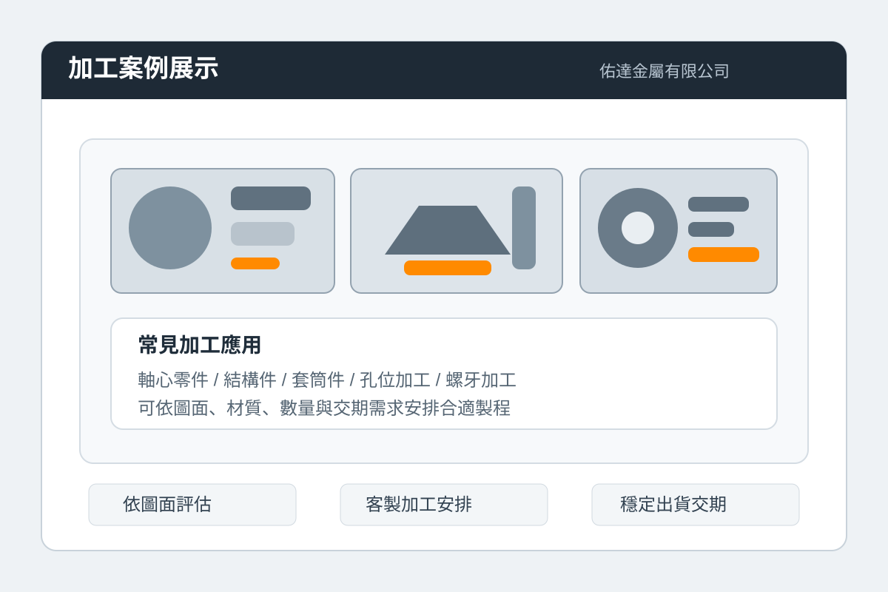

SERVICES
服務項目
CNC車床
適合圓柱型、軸心類、套筒類零件加工，兼顧精度、效率與重複穩定性。
CNC銑床
支援平面、槽孔、外型與複合輪廓加工，滿足多樣零件與客製需求。
鑽孔
依圖面要求安排孔徑、深度與位置控制，適用於多種金屬零件加工流程。
攻牙
配合工件材質與規格需求，執行穩定牙紋加工，提升後續裝配可靠性。
VISUALS
加工展示

CNC車床
適合軸心、套筒、圓柱型工件，重視穩定尺寸與同心度控制。

CNC銑床
適合平面、槽孔、多面與異形加工，提升零件客製與加工彈性。

鑽孔與攻牙
重視孔位、牙紋與裝配精度，讓後續零件結合更穩定可靠。

品質檢驗
加工完成後進行尺寸、公差與出貨前確認，讓品質與交期更穩定。

加工案例
可依圖面、材質、數量與交期需求，安排合適製程與客製加工方式。
PROCESS
加工流程
需求確認
依照圖面、材質、尺寸、公差與交期條件，先確認加工規格與目標。
製程規劃
依零件特性安排車床、銑床、鑽孔、攻牙等工序，建立穩定加工路徑。
精密加工
依既定參數執行加工，控制尺寸穩定、表面品質與加工效率。
品質確認
完成加工後進行品質檢查與出貨安排，協助客戶穩定銜接後續製程。
CASE STUDY
案例介紹
軸心零件加工
零件類型：軸心類、套筒類、旋轉對稱零件
使用製程：CNC車床、鑽孔、攻牙
加工重點：外徑、內徑、端面與同心度穩定控制
品質重點：尺寸一致性與量產穩定性
結構件與外型零件
零件類型：平面件、異形件、多面加工件
使用製程：CNC銑床、鑽孔、攻牙
加工重點：平面精度、槽孔位置與外型加工完整度
品質重點：孔位精度與組裝相容性
客製孔位與牙紋加工
零件類型：需鎖附、組裝或模組化應用零件
使用製程：鑽孔、攻牙、尺寸檢驗
加工重點：底孔尺寸、牙規搭配與孔深控制
品質重點：鎖附穩定與後續裝配可靠性
ARTICLES
技術文章
FAQ
常見問題
可提供哪些加工服務？
目前提供 CNC車床、CNC銑床、鑽孔、攻牙等金屬加工項目，可依圖面規劃製程。
可依需求客製加工嗎？
可以，歡迎提供尺寸、材質、用途與圖面，我們可協助評估加工方向。
如何聯絡我們？
可致電 03-3299756，或寄信至 yoda25741@gmail.com 與我們聯繫。
CONTACT
歡迎來電與我們聯繫
若您有金屬零件加工、客製製程規劃、交期評估或合作需求， 歡迎透過電話、Email 或社群平台與佑達金屬有限公司聯絡。
公司名稱佑達金屬有限公司
營業項目CNC車床 / CNC銑床 / 鑽孔 / 攻牙
聯絡電話03-3299756
E-mailyoda25741@gmail.com
Facebookfacebook.com/yodametal168
商業頁面yoda.tw66.com.tw
營業時間週一到週五 08:00-17:00